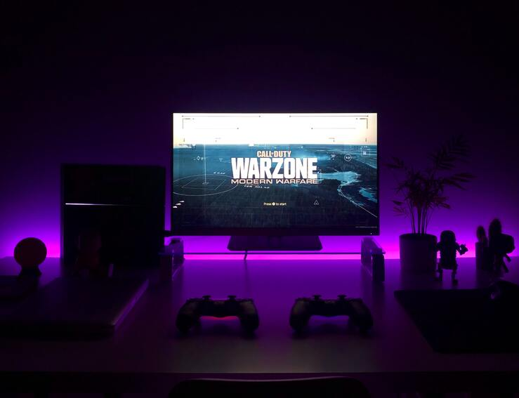
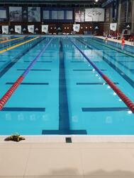
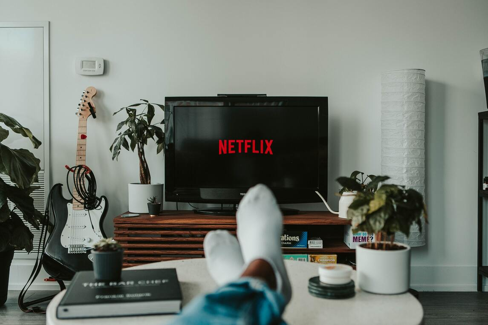
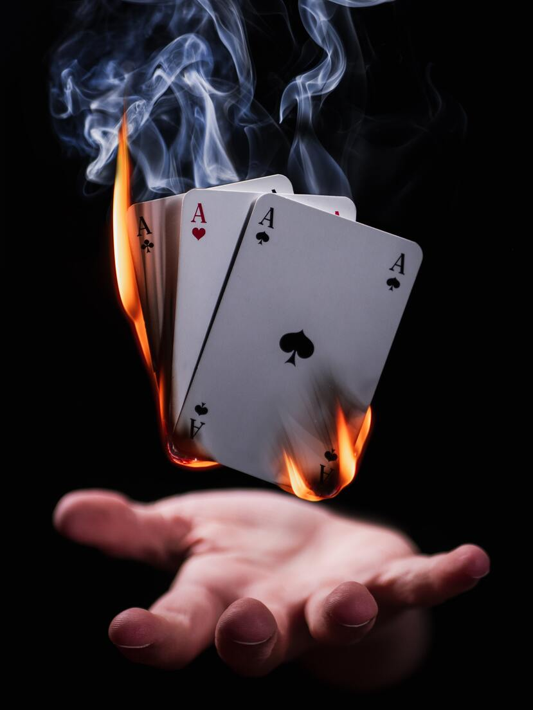

Hobby's en interesses
Hobby's

Gamen is al lange tijd een groot iets in mijn leven. Wanneer ik mij gestrest voel of me verveel, kan ik hier enorm veel tijd aan besteden. Het liefst game ik op mijn playstation 4, al kan je me ook vaak vinden voor een game op de computer.
Lezen brengt me telkens weer tot rust. Al doe ik het niet zo vaak, als ik zou willen. Toch geraak ik makkelijk verdwaald, wanneer ik toch begin met lezen. Dit kan er voor zorgen dat ik uren kwijt kan zijn aan het lezen van een boek, zonder dat ik ook maar één minuut zou merken.

Van kleins af aan ben ik al een echte waterrat. Ik hield van zwemmen en kon dit uren doen. Het zwemmen gaf me een vrijheid, waardoor ik even al mijn gedachten kon links laten liggen. Echter is het nu lang geleden dat ik nog eens gezwommen heb, al ga ik hier later terug mee beginnen. Want het gevoel van water om me heen, mis ik enorm hard.
Interesses
Harry Potter is al lange tijd het grootste deel in mijn leven. Telkens ik Harry Potter lees/kijk voelt het voor mij weer als thuiskomen. De magie die in de boeken/films zitten, weet me telkens opnieuw te fascineren. Hierdoor geraak ik nooit uitgekeken op het universum, waardoor het een enorm groot deel van mijn leven is geworden.
 Programmeren is voor mij een passie geworden, tijdens mijn avontuur van Volwasseneonderwijs. Hier heb ik voor het eerst kennis gemaakt met coderen en meteen wist ik, dat ik dit voor de rest van mijn leven wilde doen. Het creëren van programma's kan soms lastig zijn, maar telkens als het programma klaar is, geeft het mij een voldoening waar ik trots op ben.
Programmeren is voor mij een passie geworden, tijdens mijn avontuur van Volwasseneonderwijs. Hier heb ik voor het eerst kennis gemaakt met coderen en meteen wist ik, dat ik dit voor de rest van mijn leven wilde doen. Het creëren van programma's kan soms lastig zijn, maar telkens als het programma klaar is, geeft het mij een voldoening waar ik trots op ben.

Films en tv series kijken is wat ik vooral 's avonds doe. Wanneer ik series of films kijk, moet ik me nergens anders mee bezig houden. Dit is voor mij echt een moment om tot rust te komen na een zware/drukke dag. Zolang het een goede serie/film is met als genre fantasie, ben ik er altijd om te vinden om mee te kijken.
Extra
Sporten is iets wat ik recent heb ontdekt. Vroeger was ik voor sporten nooit te vinden, maar sinds mijn afval-avontuur ben ik hier helemaal verliefd op geworden. 3x per week ga ik naar de basic-fit. Echter sinds school heb ik hier minder tijd voor, waardoor het sporten een beetje naar de achtergrond is verplaatst.
 Poolen kijk ik enorm graag op de televisie. Ondanks ik het zelf nog nooit gedaan heb, is het toch iets wat ik ooit zou willen doen. Echter is het iets wat op mijn to do list staat, al ontbreek ik nog een pooltafel. Daarom zal het voor nu nog naar poolen kijken op de televisie.
Poolen kijk ik enorm graag op de televisie. Ondanks ik het zelf nog nooit gedaan heb, is het toch iets wat ik ooit zou willen doen. Echter is het iets wat op mijn to do list staat, al ontbreek ik nog een pooltafel. Daarom zal het voor nu nog naar poolen kijken op de televisie.

Magie is waar ik al van kinds af aan gefascineerd door ben. Ondanks ik er zelf niet heel veel van kan, interesseert het onderwerp me wel enorm. Je kan me dan ook vaak filmpjes zien bekijken, waarin goocheltrucs worden gedaan.
Opsomming
Omdat het nog al een aantal hobby's en interesses zijn, is hier een kleine opsomming waar alle hobby's en interesse staan, zonder uitleg.
| Hobby's | Interesses | Extra's |
|---|---|---|
| Gamen | Harry Potter | Sporten |
| Lezen | Programmeren | Poolen |
| Zwemmen | Tv serires en films | Magie |